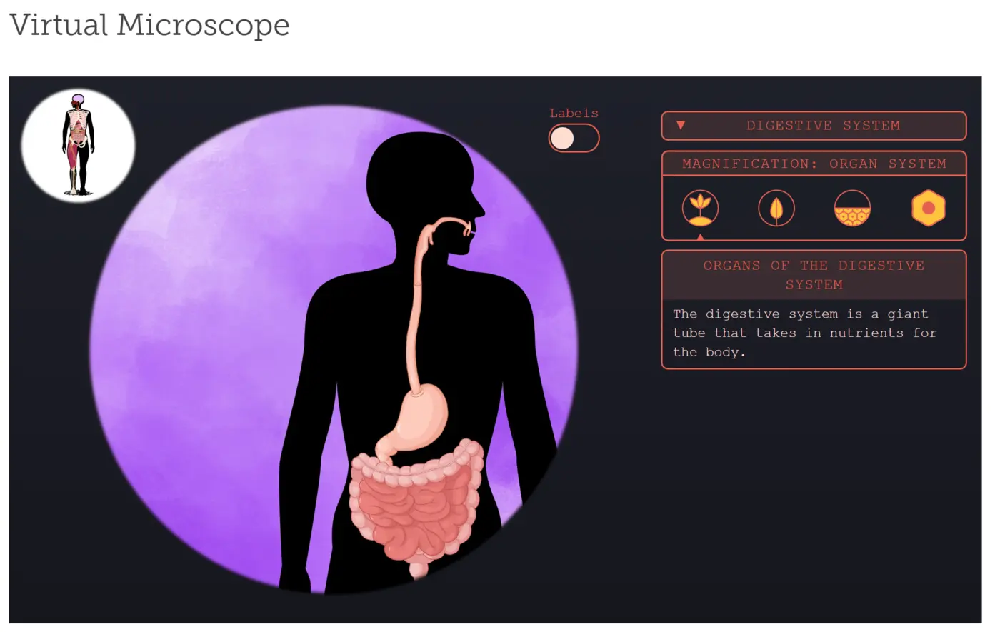
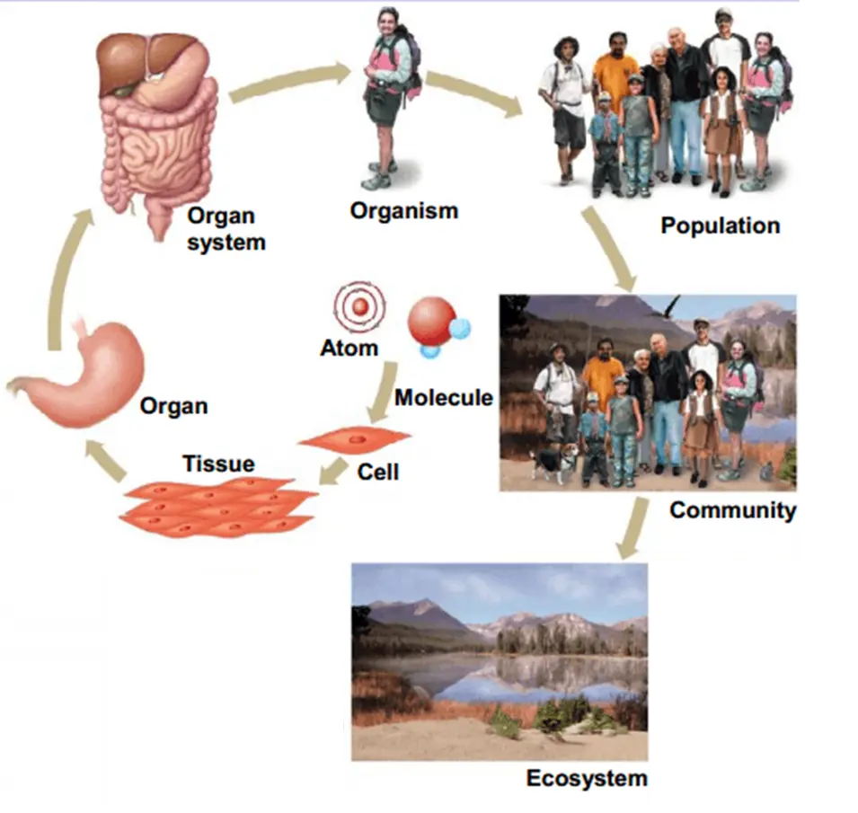
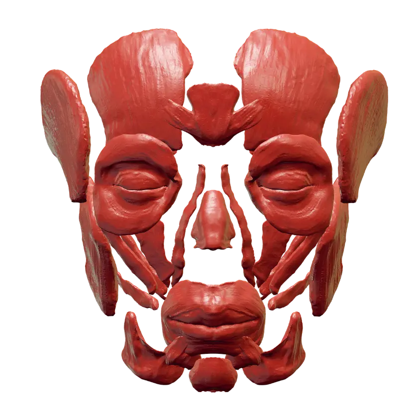

What you need to know (specification)
- 2.1describe the levels of organisation in organisms: organelles, cells, tissues, organs and systems
Levels of organisation 2.1
Living things are organised in levels, from the smallest parts inside a cell up to the whole organism:
Organelle → cell → tissue → organ → organ system → organism
Each level is made of the one before it.
Each level is made of the one before it.
 VideoCognito: levels of organisationyoutube.com ↗
VideoCognito: levels of organisationyoutube.com ↗
InteractiveVirtual microscope: zoom from organism to cellslearn.genetics.utah.edu ↗
Organelles and cells 2.1
Cells are the building blocks of life.
Each cell is made up of organelles, which do different jobs that give the cell its function (for example the nucleus and chloroplasts).
There is more on cells in 2b.
Tissues 2.1
Tissue: a group of similar cells working together to carry out a specific function.
Muscle is an example of a tissue. It is made of many muscle cells all working together.

Organs 2.1
Organ: a group of tissues working together to carry out a specific function.
Well-known human organs include the brain, heart, liver, kidney and skin.
Plant organs include the leaf and the stem.
Heart animation by DrJanaOfficial, CC BY-SA 4.0 · source
Organ systems 2.1
Organ system: several organs working together to do a job.

The 7 main organ systems (you will meet them in detail later in the course):
- Digestive
- Respiratory
- Circulatory
- Excretory
- Nervous
- Endocrine
- Reproductive
Practice
True or false?
The skin is an example of a tissue.
Organelles are larger than cells.
A tissue is a group of similar cells that carry out a specific function.
A leaf is an example of an organ.
The digestive system is an example of an organ system.
Exam-style question
Number these key terms to put them in size order, starting with 1 as the smallest: organ, organism, tissue, organelle, cell, organ system.[2]
Show mark scheme
1 organelle · 2 cell · 3 tissue · 4 organ · 5 organ system · 6 organism (all correct = 2 marks; one pair swapped = 1 mark)
 QuizKahoot: cells, tissues and movement of substances (2a, 2b, 2d)create.kahoot.it ↗
QuizKahoot: cells, tissues and movement of substances (2a, 2b, 2d)create.kahoot.it ↗